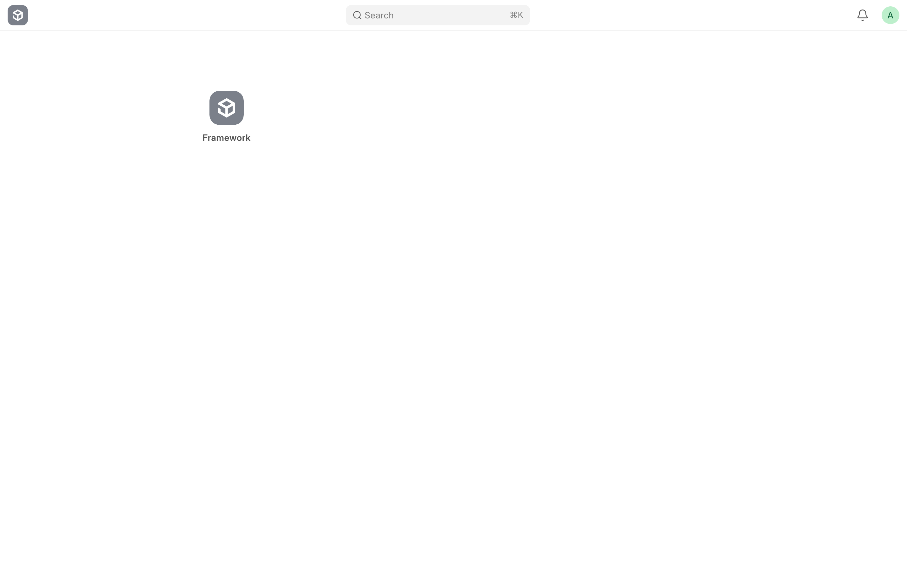

Architecture¶
Read this page before you build an app. It explains the parts of a Frappe installation, the path of one HTTP request, and the processes that run beside the web server. The details of each part are in the developer guide.
Bench, site and app¶
| Term | What it is | On disk |
|---|---|---|
| Bench | One installation folder. It holds the code, the Python environment and all sites. | frappe-bench/ with apps/, sites/, env/, config/, logs/, Procfile |
| App | A Python package that adds DocTypes, pages, APIs and hooks. Frappe itself is an app. | apps/<app_name>/ |
| Site | One tenant: one database, one set of files and one site_config.json. |
sites/<site_name>/ |
The apps available to the bench are listed in sites/apps.txt. Each site installs a subset of them, in order. frappe is always the first app.
Multi-tenancy¶
One bench serves many sites from the same processes. For each request, init_request() in frappe/app.py picks the site in this order:
- The site given to
bench serve(for example withbench --site <site> serve). - The
X-Frappe-Site-Namerequest header. - The host name of the request, without the port (
get_site_name()infrappe/utils/__init__.py).
Then frappe.init(site) loads the site config and frappe.connect() opens the site database. State for the request lives in frappe.local, which is local to the thread.
Configuration is merged from sites/common_site_config.json (all sites) and sites/<site>/site_config.json (one site). See Configuration.
Request lifecycle¶
The WSGI entry point is application() in frappe/app.py. Gunicorn runs it in production. bench serve runs it with the Werkzeug server in development. Version 16 also has an ASGI entry point, frappe.asgi:application, for uvicorn. It serves the web app and the Python realtime server in one process.
init_request()finds the site, connects to the database and buildsfrappe.form_dictfrom the query string and body. It loads the session from the session cookie (HTTPRequestinfrappe/auth.py). Then it runs thebefore_requesthooks.validate_auth()reads theAuthorizationheader. It sets the user from an API token or an OAuth bearer token.-
The request picks the handler:
Request Handler OPTIONSAn empty response (CORS preflight). Has a cmdform valuefrappe.handler.handle(). Deprecated./api/*frappe.api.handle(). Routes/api/v1/*(also/api/*) and/api/v2/*./backups/*frappe.utils.response.download_backup()/private/files/*frappe.utils.response.download_private_file()(permission check)/.well-known/security.txtThe text from Security Settings(HTTPS only)./.well-known/*Other well-known files any other GET,HEAD,POSTfrappe.website.serve.get_response()(website and desk pages) -
If no exception occurs,
sync_database()commits forPOST,PUT,DELETEandPATCH. It rolls back for other methods, unlessfrappe.local.flags.commitis set. - If an exception occurs, Frappe makes an error response and rolls back the transaction. A database deadlock or lock timeout returns HTTP status
508. - The
after_requesthooks run. Then the response gets its headers and cookies. - Callbacks added to
frappe.request.after_responserun after the response is sent.
Public files under /files/ do not go through application(). In production, nginx serves them from sites/<site>/public/files/. In development, the static file middleware of bench serve serves them.
Note
A request with a cmd form value logs a deprecation warning. Support ends in version 17. Call /api/method/<dotted.path> instead.
Whitelisted methods¶
/api/method/<dotted.path> resolves the Python function and calls frappe.handler.execute_cmd(). This checks that the function has the @frappe.whitelist() decorator and that the HTTP method is allowed. Then it calls the function with frappe.form_dict as keyword arguments. The return value is sent as message in the JSON response. See Whitelisted methods and REST API.
Desk, website and API¶
One process serves three kinds of clients:
| Area | Route | Who uses it | Built from |
|---|---|---|---|
| Desk | /desk and /desk/<path> |
Logged-in System Users | frappe/www/desk.html and the JS bundle desk.bundle.js. Routing inside the desk is done in the browser. |
| Website and portal | all other routes, for example /login, /me, web forms, www/ pages |
Guests and Website Users | Page renderers in frappe/website/page_renderers/ |
| API | /api/v1/*, /api/v2/* |
Scripts, mobile apps, the desk itself | frappe/api/ |
The hook website_route_rules in frappe/hooks.py maps /desk/<path:app_path> to the desk page. It also maps /studio/<path> and /flow/<path> to the Studio and Flow pages. The hook website_redirects sends /app, /app/* and /apps to /desk. A Guest who opens /desk gets a redirect to /login. A Website User gets a permission error.
For website routes, PathResolver in frappe/website/path_resolver.py tries the page renderers in this order: renderers from the page_renderer hook, then StaticPage, WebFormPage, DocumentPage, TemplatePage, PrintPage and ListPage. See Website.

Processes¶
bench start (development) or the process manager (production) runs these processes:
| Process | Command | Job |
|---|---|---|
| Web | bench serve / Gunicorn |
Runs frappe.app.application for HTTP requests. |
| Worker | bench worker |
Runs background jobs from Redis queues. |
| Scheduler | bench schedule |
Every tick, enqueues the due scheduled jobs of each site. |
| Realtime | bench socketio |
Socket.IO server for live updates in the browser. |
| Redis cache | redis-server config/redis_cache.conf |
Cache store (redis_cache). |
| Redis queue | redis-server config/redis_queue.conf |
Job queues and realtime pub/sub (redis_queue). |
Background workers¶
frappe.enqueue() puts a job in a Redis queue (RQ). A worker process takes jobs from one or more queues and runs each job in the context of its site. The built-in queues and their default timeouts (get_queues_timeout() in frappe/utils/background_jobs.py) are:
| Queue | Default timeout |
|---|---|
short |
300 seconds |
default |
300 seconds |
long |
1500 seconds |
Add more queues with the workers key in common_site_config.json. See Background jobs.
Scheduler¶
bench schedule runs start_scheduler() in frappe/utils/scheduler.py. On each tick it reads the Scheduled Job Type records of every site and enqueues the jobs that are due. The workers run them. Apps add jobs with the scheduler_events hook. See Scheduler.
Realtime¶
Server code calls frappe.publish_realtime(). This publishes the event to the Redis channel events on the redis_queue server. The realtime server reads the channel and sends the event to the browser sockets in the right room (user, document or DocType). The browser receives it with frappe.realtime.on().
bench socketio starts one of two servers, set by socketio_backend in common_site_config.json:
node(default):apps/frappe/socketio.js.python:python -m frappe.realtime.server, a Python Socket.IO server on asyncio and uvicorn. It calls back to the web process to authenticate sockets and check permissions. Apps add event handlers in<app>/realtime/handlers.py.
Both listen on socketio_port (default 9000). See Realtime.
Metadata-driven model¶
Frappe stores the data model as data. A DocType is a document that describes a table: its fields, permissions, naming and form layout.
- Each DocType has one table named
tab<DocType>, for exampletabToDo. - Each field of a DocType is a column. Standard columns (
name,owner,creation,modified,modified_by,docstatus,idx) are added to every table. - A child DocType (
istable) stores its rows in its own table, withparent,parenttypeandparentfieldcolumns. - A Single DocType (
issingle) has no table. Its values are stored intabSingles. - The form, list view, REST API, permissions and reports all read the same DocType metadata (
frappe.get_meta()).
A standard DocType belongs to an app. Its definition is a JSON file in the app, for example frappe/desk/doctype/todo/todo.json. bench migrate syncs these files to the database. A custom DocType (custom = 1) exists only in the site database. See DocTypes.
Modules¶
A module groups DocTypes, reports, pages and workspaces inside an app. Each module is a Module Def record and a Python package in the app:
apps/sample_app/sample_app/ # Python package of the app
├── hooks.py
├── modules.txt # list of module names
└── sample_app/ # module folder "Sample App"
├── .frappe # marks the folder as a module
└── doctype/
└── sample_item/
├── sample_item.json
├── sample_item.py
└── sample_item.js
A new app gets one module with the same name as the app title. bench new-app writes both modules.txt and the .frappe marker file. modules.txt is kept for compatibility (boilerplate_modules_txt() in frappe/deprecation_dumpster.py). See Apps.